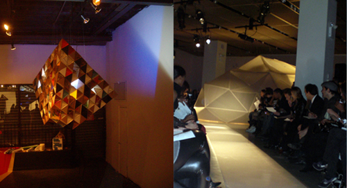
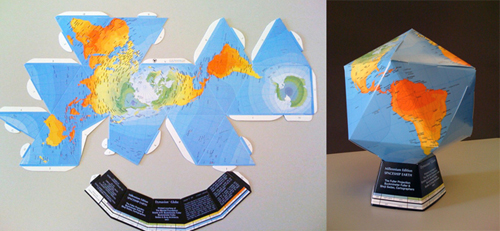
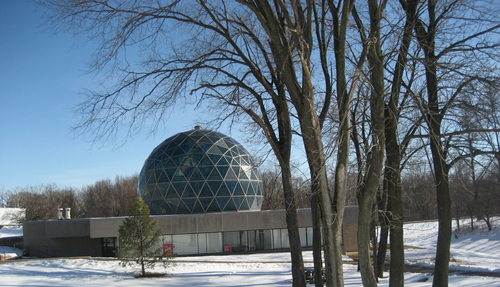
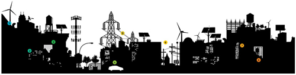
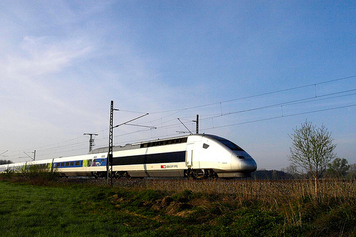
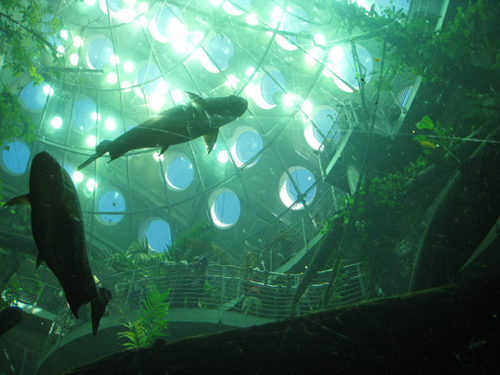
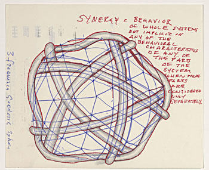

Welcome to Vol. 10 No. 2 of Design Science News, the e-bulletin of the Buckminster Fuller Institute
Design Science News brings you important updates about BFI’s programs and activities as well as news from around the world related to humanity’s option for success and comprehensive design science.Join us for the 2009 Buckminster Fuller Challenge conferring ceremony in Chicago
Mark your calendars!
Join us for 2009 Buckminster Fuller Challenge prize conferring ceremony and weekend of celebrations in June!
The 2009 Buckminster Fuller Challenge prize will be awarded at the Museum of Contemporary Art in Chicago, IL in early June 2009 to coincide with the celebrated Fuller retrospective Starting with the Universe, opening March 14th and on view through June.
Stay tuned for exact dates and details for a weekend of public programs, lectures, receptions and related events around Bucky and the Challenge in Chicago in June!
BFI’s ’Prototype’ design and build program featured at events in New York City
Launched in November 2008, BFI’s Prototype - a program bringing together local artists, designers and architects in the exploration of structure - meets monthly to engage in discussion, design and building new forms.
Prototype was invited to design a geometric-based installation for an event to celebrate the book release of Towards 2012: Perspectives on the Next Age. Prototype chose to explore an obvious structure connecting Buckminster Fuller and the Mayans - the tetrahedron or pyramid. Using a space-frame structure (Fuller’s Octet Truss) - Prototype constructed a 10 frequency tetrahedron (picured above, left) with one truncated vertex (in reference to the flat tops of the Mayan pyramids). Translucent plastic pieces were scarcely distributed amongst the hundreds of recycled cardboard components that comprised the bulk of the structure to allow the fluorescent light generated from within to illuminate outside. The installation was funded by Mangusta & LAFCO Productions.
New York based fashion designer Laura Dawson invited Prototype to create a geodesic-dome inspired architectural installation (pictured above, right) that would serve as both dressing/makeup room, and fashion show centerpiece for the unveiling of Dawson’s spring collection during New York’s 2009 Fashion Week. Through experimentation with network programming, Prototype participant Matt Howard attempted to liberate Fuller’s structural lattices from their platonic solids and reinterpret the struts on dome structures as social connections, molded by forces from physical and behavioral simulations. Fabricated from machine cut triangles of corrugated plastic, the structure was assembled and installed by Prototype participants. The installation was funded by Red Bull.
Watch a video from backstage
New Dymaxion Fold-Up Globes available in our online store
A new version of the Dymaxion Fold-Up Globe is now available. This version is based on Fuller’s popular Air/Ocean Dymaxion map which presents the world’s temperature zones shaded in attractive colors with updated city names. The globe punches out and folds up into a 5-1/2 inch icosahedron globe to illustrate the synergetic geometric principles behind this revolutionary map design.
Find out more about the Dymaxion Map
Purchase a copy from our online store
Buckminster Fuller: Starting with the Universe recognized by International Association of Art Critics/USA
The award for best architecture or design show will be presented to Buckminster Fuller: Starting with the Universe, curated by K. Michael Hays and Dana Miller and appearing at the Whitney Museum of American Art. Second place goes to Design and the Elastic Mind, organized by Paola Antonelli (who participated in a panel discussion at last year’s Challenge conferring ceremony at the Center for Architecture) at the Museum of Modern Art.The International Association of Art Critics/USA bestows its annual awards honoring artists, museums and curators at the Guggenheim Museum in New York City on Mar. 2, 2009.
To inquire about attending the awards ceremony please send an email to aicausaprogram (at) gmail (dot) com
Buckminster Fuller posthumously given Center for Spirituality and Sustainability’s annual Sustainability Award
Photo by Lucilla Marvel
On January 31st the Center for Spirituality and Sustainability in Edwardsville, IL gave Buckminster Fuller their annual Sustainability Award “in recognition of his prescient awareness of the urgent necessity of planetary stewardship, his courage and creativity in breaking through apparent limits to design possibilities, his moral and spiritual commitment to applying intelligence for the welfare of the earth and its inhabitants, and for the insights and inspiration inherent in the principles he articulated and the designs he instantiated.”
The award was accepted by BFI Board member Lucilla Marvel.
Download a pdf transcript of Lucilla’s remarks.
TRENDS & PERSPECTIVES
The future of electricity: liberalisation, long distance transmission, HVDC and supergrids
Image via New York Times
Russia is running out of gas, oil is peaking globally, and energy prices are escalating. The most recent climate change science from NASA tells us that we must stabilise our carbon dioxide emissions at 350 parts per million, a figure we have already overshot with emissions currently standing at 385 parts per million. The joint challenges facing us are of the widespread adoption of low carbon energy sources and the implementation of resource and requirement-appropriate electricity grids. Business as usual is simply no longer an option.
For Europe, that means some major changes ahead: of the way we generate electricity, new customer requirements, new technology opportunities. We fundamentally need to change our ageing transmission grids and electricity networks to embrace a trans-national smart grid able to accommodate clean energy sourced from geographically wide ranging locations from the likes of wind in Northern Europe and concentrating solar power farms in the Sahara. Some of this power will be from intermittent sources (wind), some not (heat storage can be used for CSP) and some power may go the opposite way through the grid. This is contrary to the situation at present, where the flow is largely unidirectional - from the power station down to the user.
A growing consensus is gaining momentum at Brussels level that in addition to adoption of large scale low carbon energy resources, home generated electricity from microgeneration will also become the norm, with surplus sold to the grid. Other demands on the grid will evolve, such as the use of electric cars that will be plugged in overnight to recharge. Our grids will need to accommodate these varied, complex and fluctuating loads. (Source: Claverton Energy Reserach Group)
Related:
» Does a big economy need big power plants?
» Can offshore grids solve our wind power woes?
Ecology of finance
Even free-marketeers like Alan Greenspan now recognize that unregulated capitalism has serious, perhaps fatal, weaknesses, and is in need of a tune-up. The world could try to develop a new model from first principles, but Princeton’s Simon Levin, the Scripps Institute’s George Sugihara, and Oxford’s Bob May have published work pointing out that there are many natural systems that mimic, in nontrivial ways, the functioning of financial markets. “I’ve come to understand,” says Levin, “that they’re the same kinds of systems.” Both feature competition for limited resources; individuals trying to maximize their own return; and competition and exploitation as well as the need for cooperation.
Moreover, Levin and his colleagues argued in a 2006 report for the National Academies of Science and again in a 2008 commentary in Nature that the long history of natural systems is strong evidence of those systems’ resilience against major shocks. For instance, some features, such as predator-prey ratios, have remained stable over hundreds of millions of years. The challenge is to engineer financial markets that are similarly robust.
Levin is hesitant to appropriate any model, in toto, from one system and indiscriminately apply it to another; an ecology and an economy will never be perfectly analogous. Rather, he says, researchers should try to find the shared principles that govern the behavior of each.
Economies and ecosystems are what Levin calls complex adaptive systems, ones, he says, “that are made up of lots of individual agents that act together in smaller scales.” The collective consequences of those actions exhibit the hallmark features of complexity. A key feature of complex adap tive systems is that they can settle into a number of stable equilibria: The tech bubble of the 1990s was one such state, but so was the Great Depression. Similarly, in ecosystems, it is natural for species to go extinct; so too is it for corporations. (Source: Seed)
Related:
» Adapting to a new economy
The potential of high-speed rail: restructuring the U.S. transportation system
Photo by flickr user ceaabe
Aside from the overriding need to stabilize atmospheric carbon dioxide levels to stabilize climate, there are several other compelling reasons for countries everywhere to restructure their transport systems, including the need to prepare for falling oil production, to alleviate traffic congestion, and to reduce air pollution. The U.S. car-centered transportation model, with three cars for every four people, that much of the world aspires to will not likely be viable over the long term even for the United States, much less for everywhere else.
The shape of future transportation systems centers around the changing role of the automobile. This in turn is being influenced by the transition from a predominantly rural global society to a largely urban one. By 2020 close to 55 percent of us will be living in cities, where the role of cars is diminishing. In Europe, where this process is well along, car sales in almost every country have peaked and are falling.
With world oil output close to peaking, there will not be enough economically recoverable oil to support a world fleet expansion along U.S. lines or, indeed, to sustain the U.S. fleet. Oil shocks are now a major security risk. The United States, where 88 percent of the 133 million working people travels to work by car, is dangerously vulnerable.
Beyond the desire to stabilize climate, drivers almost everywhere are facing gridlock and worsening congestion that are raising both frustration and the cost of doing business. In the United States, the average commuting time for workers has increased steadily since the early 1980s. The automobile promised mobility, but after a point its growing numbers in an increasingly urbanized world offer only the opposite: immobility.
While the future of transportation in cities lies with a mix of light rail, buses, bicycles, cars, and walking, the future of intercity travel over distances of 500 miles or less belongs to high-speed trains. (Source: Grist)
Related:
» Stimulus Roadblock?
Google Earth fills its watery gaps
Two and a half years ago, the software engineers behind Google Earth, the searchable online replica of the planet, were poised to fill an enormous data gap, adding the two-thirds of the globe that is covered by water in reality and was blue, and blank, online.
But until then all of the existing features on Google Earth - mountains, valleys, cities, plains, ice sheets - were built through programming from an elevation of zero up.
“We had this arbitrary distinction that if it was below sea level it didn’t count,” recalled John Hanke, the Internet entrepreneur who co-created the progenitor of Google Earth, called Keyhole, and moved to Google when the company bought his company in 2004.
That oversight had to be fixed before the months and months of new programming and data collection could culminate in the creation of simulated oceans. On Monday, the ocean images will undergo the most significant of several upgrades to Google Earth, with the new version downloadable free at earth.google.com, according to the company.
Another feature, Historical Imagery, provides the ability to scroll back through decades of satellite images and watch the spread of suburbia or erosion of coasts.
Click a function called Touring and you can create narrated, illustrated tours, on land or above and below the sea surface, describing and showing things like a hike or scuba excursion, or even a research cruise on a deep-diving submarine. (Source: New York Times)
Related:
» Google Earth, Google Ocean: mysteries of the seafloor are mapped for the first time
» Mapping the sea and its mysteries
RESOURCES
A trip to the California Academy of Sciences
Via Treehugger:
The California Academy of Sciences’ recently re-opened facility in Golden Gate Park, San Francisco, California. We had the chance to see first hand some of the building’s green features, earth-conscious exhibits, and interactive games to get visitors involved in the world around them. CAS is a pretty amazing place, and you get to walk through it with us.
Click through to take a visual tour of the California Academy of Sciences!
SpaceCollective
We hesitate to try to adequately describe SpaceCollective, so here is their description: “Where forward thinking terrestrials exchange ideas and information about the state of the species, their planet and the universe, living the lives of science fiction today.”
Imagine Bucky, Carl Sagan, Marshall McLuhan and thousands of artists, scientists, and designers from around the world shaken up in a geodesic dome and poured out onto the web and you might have a sense of what SpaceCollective is all about...or you could just go see for yourself.
Thanks to BFI Board member David McConville for tipping us off!
Geo-Birdhouse
Designer Kelly Lamb has created this beautiful ceramic geodesic birdhouse so your feathered friends can nest in style. The Geo-Birdhouse doesn’t begin shipping until May 2009 but you can preorder yours now.
EVENTS
Buckminster Fuller: Starting with the Universe opening celebration
Museum of Contemporary Art220 East Chicago Ave.
Chicago, IL
Friday, March 13, 2009, 6-9 pm
$40 per person, $35 for MCA Members. Children 12 and under are admitted free
PURCHASE TICKETS ONLINE
Join the MCA for a night of revelry and celebration. They are opening the museum’s doors for a three-floor fundraising event in honor of the new spring exhibition, Buckminster Fuller: Starting with the Universe. Proceeds from this event directly support the programs of the MCA.
Tickets include food, two complimentary beverages, and live entertainment in addition to museum admission.
FOURTH FLOOR
Celebrate the spectacular exhibition, Buckminster Fuller: Starting with the Universe, newly expanded for this presentation to highlight Fuller’s Chicago connections.
MAIN FLOOR
Savor the scintillating sounds of the Josh Berman Trio and DJ Madrid as you enjoy superb hors d’oeuvres and drinks catered by Wolfgang Puck’s.
GROUND FLOOR
Throughout the evening, screen films about Fuller, introduced by exhibition cocurators Michael Hays and Dana Miller of the Whitney Museum of American Art, and Elizabeth Smith, the MCA’s Chief Curator and Deputy Director for Programs.
Rovaté 2009: Fissures, Futures (for Buckminster Fuller)
May 22 & 23, 2009
8PM
Kanbar Hall, JCCSF
3200 California Street
San Francisco, CA
Tickets: 415.292.1233 or jccsf.org
$24 public, $21 JCCSF members, $16 students
Rova:Arts in conjunction with the San Francisco International Arts Festival and Jewish Community Center San Francisco presents Fissures, Futures (for Buckminster Fuller).
Rova Saxophone Quartet returns to Kanbar Hall for another no-sounds-barred evening of improvisatory collaboration. Acclaimed Berlin-based multimedia artist/wunderkind Lillevan, joins international music giants from the field of improvised music to perform Fissures, Futures, a set of pieces dedicated to the visionary genius that was Buckminster Fuller. Live music and digital animation will lock themselves into a continuous feedback loop - with the music influencing the real-time film’s creation and the film images inspiring the music. Not to be missed. Both shows will be recorded live for future DVD release.
To unsubscribe from this newsletter, send email to this address.
To never receive email from The Buckminster Fuller Institute, send email to this address.
This email is sent from:
The Buckminster Fuller Institute
{domain.address}